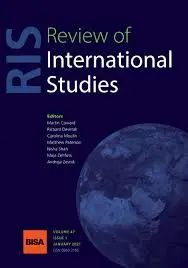
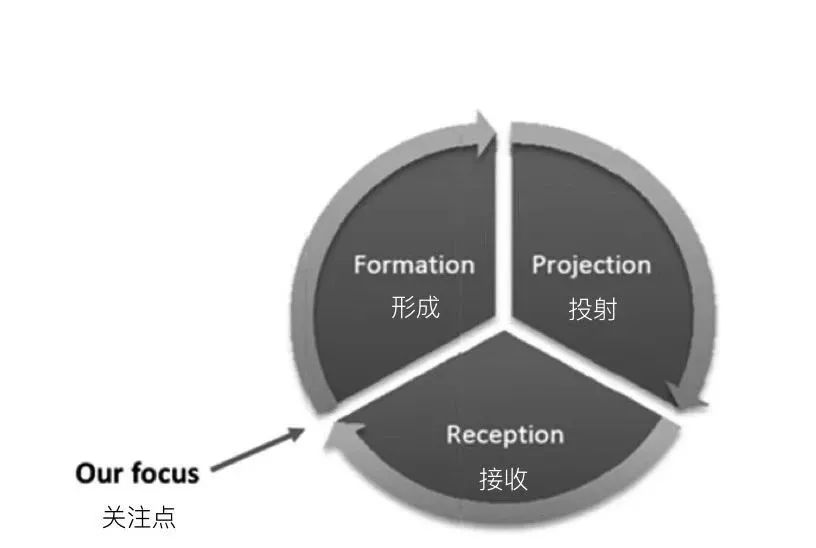
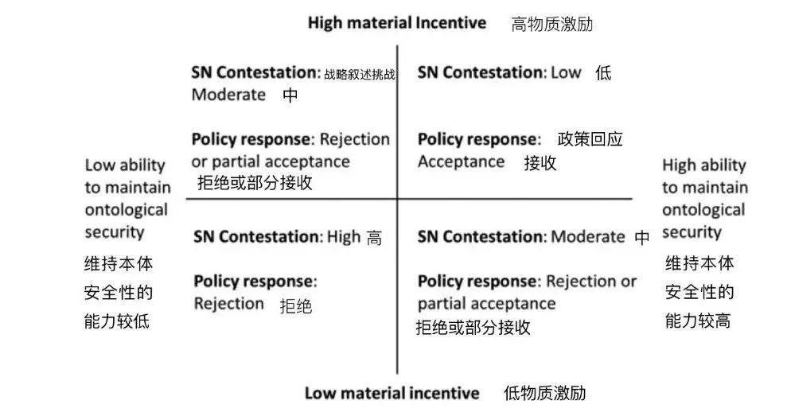
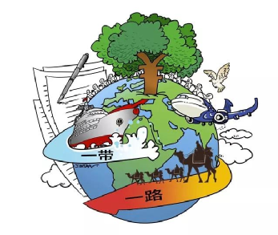
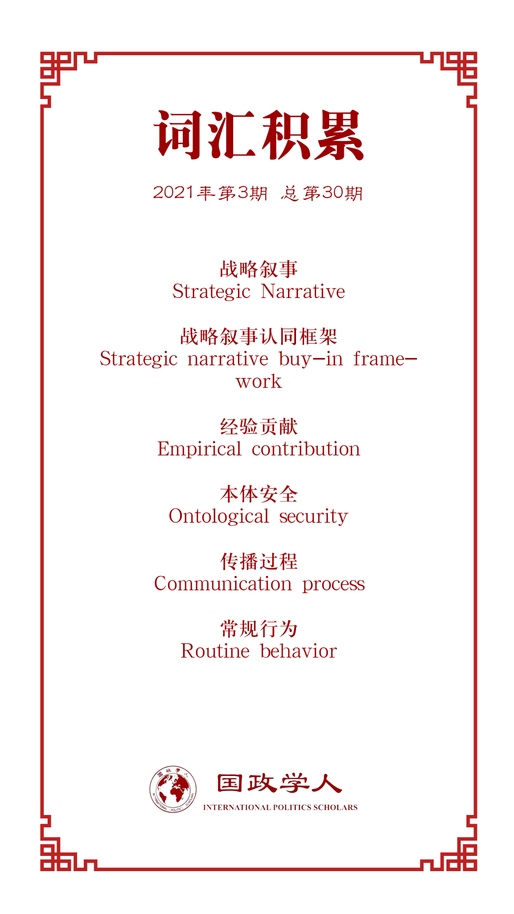

收录于合集

作品简介
【作者】 Carolijn van Noort，新西兰奥塔哥大学传媒专业博士生。Thomas Colley，伦敦大学国王学院战争研究访问学者，高级讲师。
【编译】 戴赟（国政学人编译员，外交学院硕士研究生）
【校对】 杨沛鑫
【审核】 姚寰宇
【排版】 林祉欣
【美编 】方引弓
【来源】 Van Noort, C., & Colley, T. (2021). How do strategic narratives shape policy adoption? Responses to China’s Belt and Road Initiative. Review of International Studies, 47 (1), 39-63. __
【归档】 《国际关系前沿》2021年第3期，总第30期。
期刊简介

Review of International Studies （《国际研究评论》）是由剑桥大学出版社代表英国国际研究协会出版且同行评审的国际关系学术期刊，其前身为British Journal of International Studies (1975 - 1980) 。该期刊致力于反映全球政治的性质变化和新兴的政治挑战，旨在为国际社会搭建一个可供辩论的平台用以讨论当下紧迫的全球议题。根据Journal Citation Report显示，2019年该期刊的影响因子为1.944。
战略叙事如何塑造政策采纳？
对中国一带一路倡议的回应
How do strategic narratives shape policy adoption?
Responses to China’s Belt and Road Initiative
Carolijn van Noort
Thomas Colley
内容提要
在21世纪，“战略叙事”成为一种有说服力的交流方式并受到了越来越多的关注，且吸引了国内外人士对外交政策的兴趣。这种兴趣产生于建构主义和后结构主义的国际关系理论，强调国际行为者采用不同的话语模式来界定他们的政策、角色和身份。本文通过提供理论框架来解释战略叙事在政策变化中的作用，具有原创性的贡献，并通过追踪各国如何回应2019年4月中国举办的第二届“一带一路国际合作高峰论坛”的战略叙事而提供重要的经验贡献。本文采用定性的叙事分析（qualitative narrative analysis），过程追踪（tracing the narrative-specific components）等方法，围绕第二届“一带一路国际合作高峰论坛”的政策演讲、官方文件和媒体报道进行叙述，这为各国对中国“一带一路”倡议叙事不断演变的争论提供了一个更新的视角。最后，本文讨论了战略叙事认同框架的更广泛效用，并揭示了使战略叙事在国际关系中更具说服力的因素有哪些。
文章导读
01
引言
在21世纪，“战略叙事”成为一种有说服力的交流方式并受到了越来越多的关注，且吸引了国内外人士对外交政策的兴趣。 这种兴趣产生于建构主义和后结构主义的国际关系理论，强调国际行为者采用不同的话语模式来界定他们的政策、角色和身份。许多人现在认为，战略叙事的运用是实现外交政策“认同”（buy- in）不可或缺的一部分，战略叙事是“政治行为者构建国际政治过去、现在和未来的共同含义，塑造国内和国际行为的一种手段”。与此同时，关于为什么一些战略叙事成功地塑造了政策成果，而另一些则没有成功，这有持续地争论存在。大多数战略叙事理论更善于解释连续性而不是变化，因为那些理论假设是通过与受众已经相信的事实进行内容“共鸣”而产生说服力的。
本文通过提供理论框架来解释战略叙事在政策变化中的作用，具有原创性的贡献，并通过追踪各国如何回应2019年4月中国举办的第二届“一带一路国际合作高峰论坛”的战略叙事而提供重要的经验贡献。 截至2019年4月，中国已与125个国家和29个国际组织签署了173项“一带一路”的合作文件。如此广泛的联系表明中国的战略叙事有一套令人信服的方法。然而，西方社会对“一带一路”仍存有一些质疑。本文首先确立了战略叙事（strategic narrative）、本体安全（ontological security）与政策变化（policy change）之间的理论关系。然后，它解释了各国提出战略叙事以调和物质和本体安全问题的重要性。
本文采用定性的叙事分析（qualitative narrative analysis），过程追踪（tracing the narrative- specific components）等方法， 围绕第二届“一带一路国际合作高峰论坛”的政策演讲、官方文件和媒体报道进行叙述，这为各国对中国“一带一路”倡议叙事不断演变的争论提供了一个更新的视角。最后，本文讨论了战略叙事认同框架的更广泛效用，并揭示了使战略叙事在国际关系中更具说服力的因素有哪些。
02
战略叙事
战略叙事是为实现政治目标而刻意构建的叙述。战略叙事的传播概念是一个形成、投射和接收的周期性过程。 （见图1）

图1 战略叙事的传播过程
一些研究人员已经完成了一个叙事周期的研究——先从一个国家的战略叙事形成开始，然后研究它是如何被投射和接收的。不过，很少有人研究下一个周期——理论化或追踪一个国家的战略叙事是如何被目标国家接受的，以及这是如何在目标国随后的战略叙事中被使用的。对此，本文深化了有关战略叙事的研究。
03
本体安全和政策采纳
本体安全理论家断言，国际行为不仅反映了对物质安全的渴望，而且也反映了对本体性安全的持续渴望——即随着时间的推移保持一种一致的自我意识或“存在的安全”（security of being） 。
本体安全是通过对个人或集体故事的反复叙述来建立和维护的。本体安全不仅仅是一种叙述形式上的自我意识。它通过既定的规范和日常行为不断得到巩固。国家采取行动以保证他们对自己的认识。随着时间的推移，这些行动及其所理解的故事反复构成了本体安全。一种本体安全叙述暗示了某些行为，这些行为将反映行为体在不断变化的世界中自我意识的连续性。行为的实施加强了行动者的本体论安全性，并通过叙事来理解行为。这样，战略叙事就可以在持续维护本体安全方面发挥至关重要的作用。
04
理论框架
这会令人想到关于战略叙事在政策采纳中作用的中心前提。如果一项新政策承诺未来获得物质利益，同时使行为体能够维持其本体安全，则为新政策辩护会带来更具说服力的战略叙事。
这可以通过一个（过度）简化的政策过程来解释。 首先，一个国家展现出一种战略叙事，呼吁其他国家根据自身利益改变政策。国家通过媒体生态（media ecology）的投射将会塑造战略叙事在接受时的连贯性。然后，国家必须考虑影响政策决定的所有因素。这包括考虑该政策的可取之处，假设国家必须让关键受众认可该政策。考虑到这一点和其他因素，国家做出了一个政策选择，然后国家通过预测未来将如何实现此战略叙事来证明此选择的合理性。之后，可以分析这些战略叙事，以确定国家原始战略叙事的哪些方面是决策者认为可以接受的或有问题的。
05
研究设计与方法
为了检验我们提出的战略叙事认同框架，我们调查了各国对中国关于“一带一路”倡议的战略叙事反应。中国面临的挑战是如何通过其言论和行动说服他人相信“一带一路”的良好一面，并承诺繁荣的未来。
“一带一路”与一些外交政策项目的不同之处在于，其提供了高度不同的参与方式。各国可以通过“高峰论坛框架下的多边合作机制”接受投资项目和融资，也可以直接签署包含未来合作承诺的双边和多边文件。

图2 战略叙事认同框架
06
中国“一带一路”的战略叙事
中国对第二届“一带一路”国际合作高峰论坛的战略叙事，必须放在该项目之前的叙述和经历的背景下。 最初，中国便声称，在全球化的世界中，“一带一路”将带来更多的“连通性”、“和平”和“繁荣”。2013年习近平主席访问哈萨克斯坦和印度尼西亚时，曾表示致力于加强同陆海丝绸之路沿线国家合作。2015年，中国当局将丝绸之路经济带和21世纪海上丝绸之路结合在一起，制定了一项愿景和行动计划，并促进倡议的实施，为古丝绸之路注入活力，且更紧密地连接亚洲、欧洲和非洲国家，促进互利合作。为此，中国于2015年启动了亚洲基础设施投资银行（亚投行），创建了一个拥有良好声誉的丝绸之路基金，并深化了自己的金融机构和市场之间的合作。
07
多个国家对中国战略叙事的回应
在“一带一路”峰会上，大多数国家的交流都没有体现太多关于中国“一带一路”战略叙事被接受、部分接受或拒绝的情况。这些国家往往是发布一些简短的官方声明，包括加强互联互通、多边主义和贸易。很少有声明在物质或本体安全的理由上直接对中国的战略叙事进行质疑。
大多数国家都认同“一带一路”的经济潜力，因为他们普遍认为，增加贸易和投资可以增加财富。 叙利亚就是一个很好的例子：中国和叙利亚之间的联系可以追溯到一千年前，当时达穆尔(帕尔米拉)是东西方之间重要的贸易中心。因此，中国和叙利亚是天然的伙伴。“一带一路”倡议将两国合作视为历史关系的自然延续。而美国则是一个反面案例，其正与中国发生着贸易战。另外很好的例子是哈萨克斯坦和意大利。哈萨克斯坦和意大利是“一带一路”成功的典范。“一带一路”倡议最先在哈萨克斯坦提出，得到哈萨克斯坦的积极响应。意大利是第一个加入“一带一路”倡议的七国集团国家。这两个国家都参加了2019年的第二届“一带一路”国际合作高峰论坛。
在本文的研究框架中，最容易支持“一带一路”倡议的国家是那些最容易得到“一带一路”倡议物质激励的国家。不过国际社会认为中国认同的一些国际规则和标准还有待商榷，这种想法在所谓的自由民主国家中是常见的。比如，英国和荷兰都没有加入一带一路，部分原因是他们似乎无法为其本国公民和国际盟友(尤其是美国)提供一个令人信服的战略叙事，而美国想维护其本体安全。
08
探讨
本文在2019年4月第二届“一带一路”国际合作高峰论坛的背景下，通过各国对中国“一带一路”战略叙事的回应的原始实证研究，对这一命题进行了检验。 首先，我们提出了一个战略叙事认同框架，以二乘二的网格说明物质激励和本体安全关注的组合如何影响战略叙事辩论和政策回应。然后，我们通过考察几个不同国家关于“一带一路”的战略叙事，以及中国战略叙事的争议程度如何与政策选择相一致来说明这一点。
尽管意大利国内在这一倡议上存在更多争议，哈萨克斯坦和意大利还是正式加入了“一带一路”倡议。这两国都重申了中国对“互联互通”、“伙伴关系”和增加贸易的战略承诺。哈萨克斯坦将自己定位为连接欧洲和亚洲的现代化交通枢纽。与此同时，意大利利用了丝绸之路的神话和该国位于地中海的历史中心地位使加入一带一路看起来像是过去行为的例行延续，而不是重大且有争议的政策转变。这有助于在不破坏其本体安全性的情况下证明政策改变的合理性。通过这种方式，上述国家策略性地使用叙事情节，将原本不属于常规的内容变成常规。
英国和荷兰的反应相似。双方都积极认同中国关于加强互联互通和贸易的呼吁，认为这是两国在当代和历史上产生影响的重要因素。但由于担心中国的价值观和行为，双方都拒绝直接加入。这两个国家都将“一带一路”的某些方面视为为中国帮助获得本体论上的安全，但由于这两个国家总觉得中国在有些方面与其格格不入，所以他们认为主动参与“一带一路”的可能性不大。
09
结语
本文不仅展示了理论的效用，而且通过对一些国家对“一带一路”不断变化的反应做了最新的分析，提供了经验上的贡献。 一些国家已经从对“一带一路”的犹豫不决转向对其完全接受。另一些人士则坚持对“一带一路”提出质疑，并声称“一带一路”背后的别有用心。关于“一带一路”的战略叙事和政策如何随着时间的推移而变化，将是通向进一步研究的途径。关于新冠肺炎大流行对“一带一路”国家应对和政策的影响也值得研究。
除了“一带一路”之外，在其他更多的情况下，研究我们的认同框架的效用将是有益的。不过，并非所有的研究对象都会提供像“一带一路”那样拥有明确且重大的案例。在其他情况下，对本体论安全的关注可能是政策选择的主要驱动力。例如，考虑非常规移民的战略叙事。一国欢迎大量难民进入所付出的物质成本可能会超过物质利益，但由于一些国家是所谓的“承诺人权的国家”，其还是会接受难民进入，这不仅是出于本体安全这一原因，也是出于维护其本体安全所做出的行为。
最后，本文认为战略叙事认同框架提供了一个重要的理论贡献，来解释是哪些因素使得一些战略叙事更有可能说服国际行为体采取新政策。各国在制定战略叙事时，应在不损害其他国家的本体安全的前提下设定预期获得物质利益的目标。特别需要注意的是，以一种借古讽今方式来叙述政策，似乎是维护本体安全的有用方式，即使该政策代表了某种流程的重大转变。

译者评述
在市场经济中，战略叙事的重点是重新定义现有的类别或者创建新的类别，从而产生100%的独特的信息。通过公关、内容营销和社交媒体渠道传播行业战略叙事，不仅有意义，而且有助于解决“我们听上去像其他人一样”的难题。此番道理在国际政治中的运用也有类似体现。
战略叙事对于国内和国际对外交政策的支持越来越重要。然而，关于为什么一些战略叙事成功地塑造了一些政策结果，而另一些则遭遇拒绝，这些争论仍在持续进行。人们不太了解国家如何调整其本身的战略叙事，以及战略叙事在政策采纳中的作用。针对这一点，作者引入了一个理论框架来跟踪战略叙事与政策采纳之间的关系。作者提出的中心前提是，如果一个国家能够以一种承诺物质收益但不损害其本体安全的方式对其进行战略性叙述，那么这个国家更有可能采取一项新的政策。作者使用各国对中国“一带一路”倡议的反应来检验其研究框架。最后得出了各国将中国的叙事重点放在连通性、贸易和繁荣上。然而，一些国家会质疑中国的意图是，那些国家基于其在人权问题、外交政策和债务问题方面对中国的成见而心生恐惧。本文的视角非常新颖，让身处在中国的我们了解了外国学者不一样的看法。作为中国人需要了解外国人对我们战略叙事，以此更完整地构建好我们自己的本体安全，并在世界之林中，立于不败之地。
词汇整理

文章观点不代表本平台观点，本平台评译分享的文章均出于专业学习之用, 不以任何盈利为目的，内容主要呈现对原文的介绍，原文内容请通过各高校购买的数据库自行下载。
好好学习，天天“在看”

国政学人
支持学术公益与知识传播
微信扫一扫赞赏作者 __赞赏
已喜欢，对作者说句悄悄话
取消 __
发送给作者
发送
最多40字，当前共字
上一页 1/3 下一页
长按二维码向我转账
支持学术公益与知识传播
受苹果公司新规定影响，微信 iOS 版的赞赏功能被关闭，可通过二维码转账支持公众号。